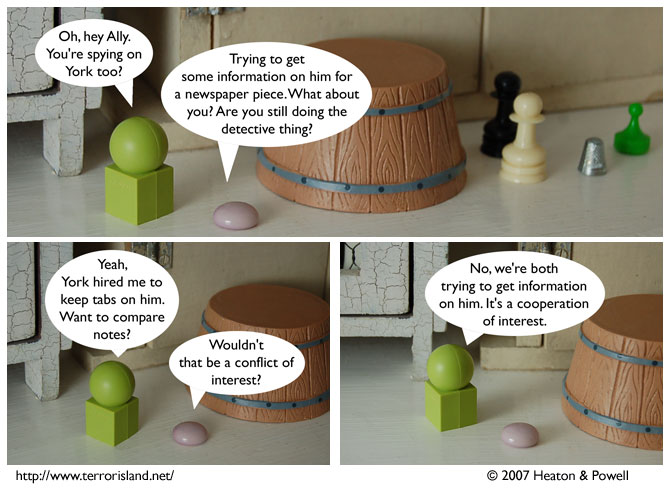

Strip #221
— Friday, November 9, 2007
Spoiler warning: there’s a secret fourth panel to this one.
Notes, Thoughts, &c.
Ben’s Notes
I know a lot of our readers are fans of diacritical marks, but we’re still not going to spell it “coöperation” in the strip. Terror Island does not pander.
Lewis’s Notes
To save you the trouble of asking, I will answer some of your questions now. 1) Because the barrel is soundproof. 2) No, Ally and First Folio are not related, why do you ask? 3) “Walk Like an Egyptian” by the Bangles. 4) While he does have the power of flight, he only has the power to fly when he is not trying to fly, and so that is why you haven’t seen him flying at all in the strip. 5) Manifest Destiny and the Frontier Hypothesis. I hope that helps.